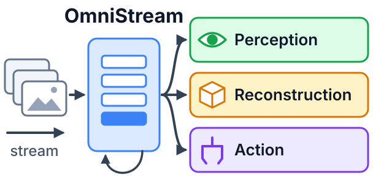
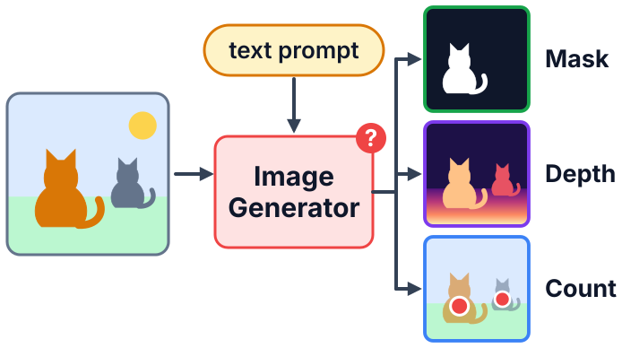
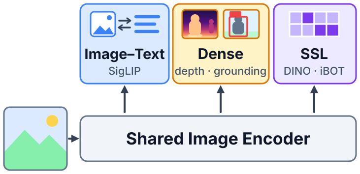
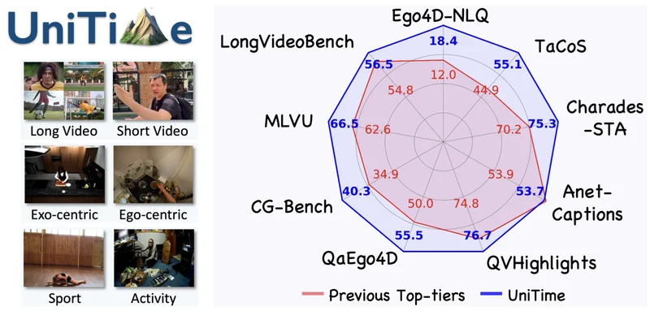
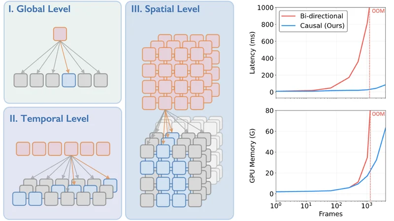
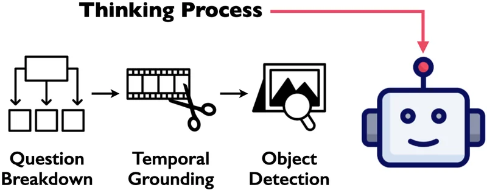
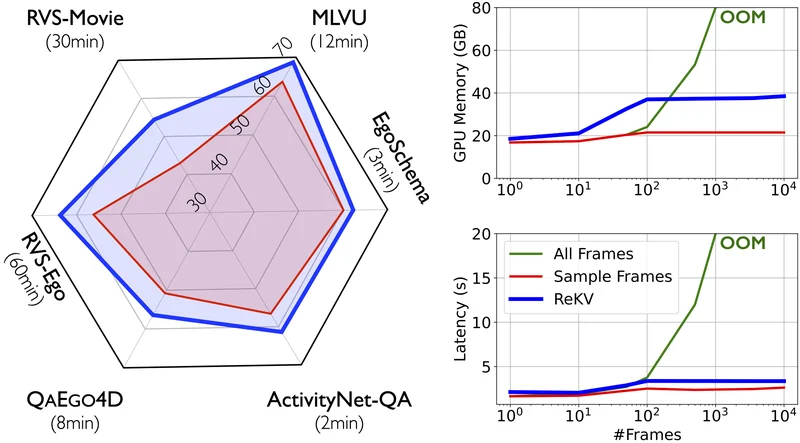
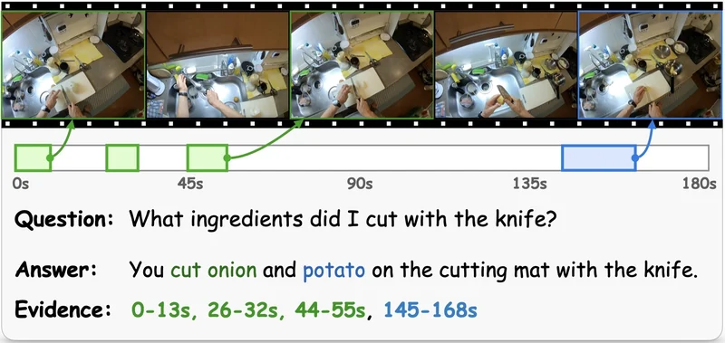
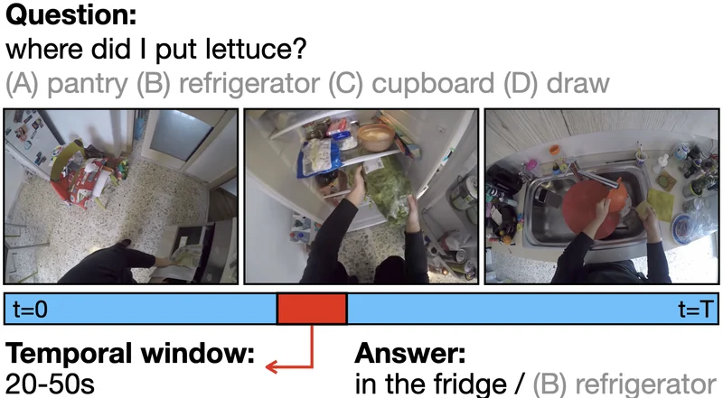
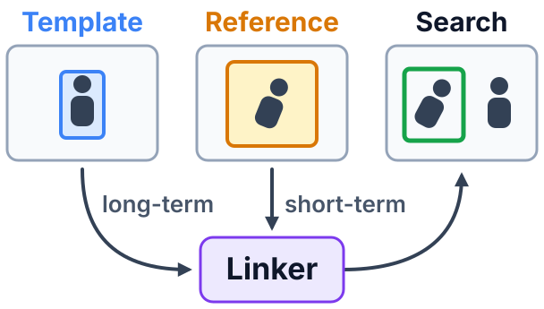

PhD Candidate at SJTU · Student Researcher at Google DeepMind
shangzhe.di@gmail.com / CV / Google Scholar / GitHub
Hi, I am a fourth-year PhD candidate at Shanghai Jiao Tong University, advised by Prof. Weidi Xie. My research focuses on video understanding and multimodal learning.
I am currently a Student Researcher at Google DeepMind in London, working on agentic 4D generation. Previously, I interned at ByteDance Seed and Alibaba.
I'm graduating in 2027 and open to opportunities in both industry and academia. Feel free to reach out if you think there's a good fit.

A unified streaming visual backbone for perception, reconstruction, and action.

Image generators exhibit strong zero-shot perception capabilities through text prompting.

Multitask pre-training can yield scalable general-purpose visual representations.

Towards universal video grounding with superior accuracy, generalizability, and robustness.

Streaming video representations at global, temporal and spatial granularity, learned via multitask training.

Distill multi-step reasoning and spatial-temporal understanding into a generative Video-LLM.

A training-free approach enabling Video-LLMs for streaming video question-answering.

Pinpoint scattered visual evidence in long egocentric videos while responding to questions.

Simultaneous query grounding and answering in long, egocentric videos.

Associate the initial template with a fast-updated reference region for robust visual tracking.
Reviewer of CVPR, ICCV, ECCV, ICLR, NeurIPS, and ICML.